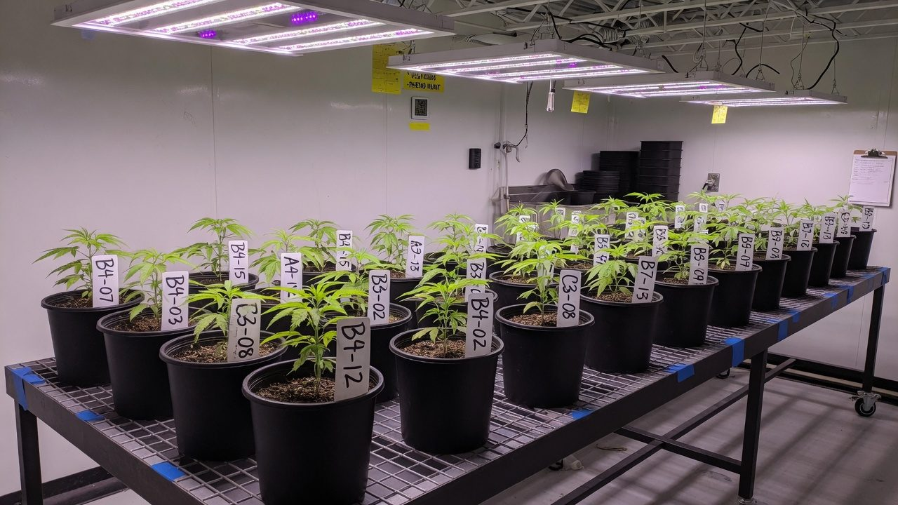
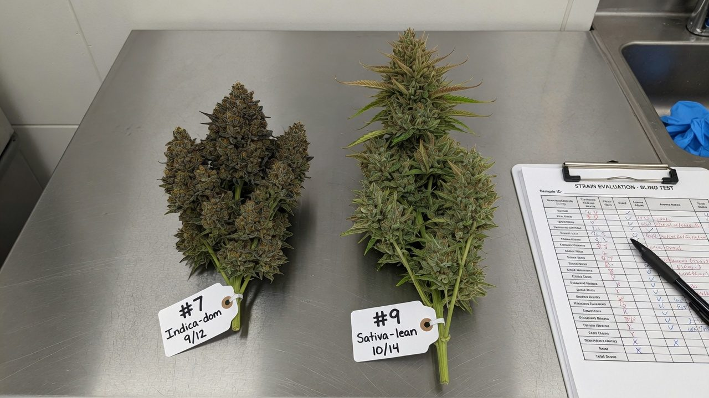
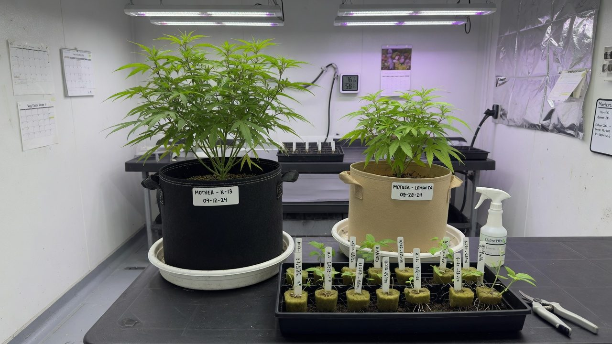
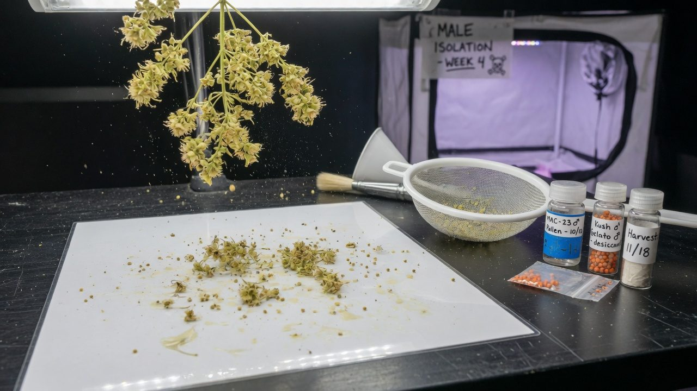

Genetics, seeds and the phenotype hunt
This paper shows the source of keeper cultivars and how to find and keep one. It gives the definitions of the terms genotype, phenotype and chemotype. It shows that you cannot be sure of the plant that a seed will make. It also shows how to do a phenotype hunt.
Purpose and scope
Each cultivar that a grower wants to use started as one plant. A person found the plant, kept it and made copies of it. This paper gives information about the genetics of a cultivar.
It shows which results you can be sure of with genetics, and which results you cannot be sure of. It shows the cause of the differences between two seeds from the same package. It gives the definitions of the terms on a seed list. It also shows how to do a phenotype hunt. A phenotype hunt is a controlled procedure to find, in a group of plants from seeds, the one plant that you want to keep.
This paper is for a person who does not know genetics. The procedure at the end is the same procedure that commercial growers use, but with a different number of plants. It is not necessary to know genetics before you read this paper. Each term has a definition where it first occurs.
- Seeds are different because of the genetics. In each generation, the genes of cannabis mix in a new combination, and the lines that growers use at this time are not very stable. Thus the plants from the seeds in one package have the same parents, but they are different.
- A strain name is a name that a supplier gives to a product. The name does not make sure that the genetics are the same. Samples with the same name are frequently plants with different genetics.
- The phenotype hunt is the method to find a good plant in this variation. Cultivate many seeds in the same conditions. Write the criteria before the start. Give each plant a score for each criterion. Keep the best plant as a clone.
- If you use more seeds, you can know more from the result. Ten seeds find the best plant of the ten. To find a keeper that has the minimum score for each criterion, you usually must germinate more than ten seeds.
- The keeper clone is the most important item. Mother plants, backup cuttings and a tissue-culture archive keep the clone safe. If you do not have the clone, the phenotype hunt gives no result.
The sequence of the sections agrees with the sequence of the work. The sections show the three layers of a plant, the source of cultivars and the cause of the differences between seeds. They show the seed types that you can get and the phenotype hunt. Then they show selection and sample size. The last sections show how to keep the best plant, how to do tests of it and how to use it in breeding.
Evidence and limitations
We want each paper to be correct. Thus we examine each paper for information that is not solid. This information comes from the view of one grower, from a small number of sources, or from grower methods that have no controlled test. We identify this information, and we do not show it as solid.
Frequently there is no paper for the decision that you must make. Then we use the reports of other growers and the methods that work in the rooms that we know. This information can help you, but it is not the result of a laboratory test. Use the methods that work for your plants, for your room and for your meters. If a table does not agree with your crop, use the data from your crop and record the difference.
- The primary definitions and the units of measurement in the paper
- Safety limits that have a citation to a regulation or a specification
- Target ranges for light, climate and feed in each stage. They are start values that you can change.
- SOPs that work in many rooms, but you must adjust them for your genetics and meters
- A number for yield or potency that you will always get, with no test at many sites
- Controller setpoints from a different facility, with no new calibration
If you find an error, make a report. We will correct it. Make the report on GitHub, with the name of the paper and the information that is incorrect. If you have a source, include it: Make a report of an accuracy problem. The regulations, labels and licenses of your area always override each procedure in these papers. The label weak in a paper shows the points where the risk of an error is highest.
Genotype, phenotype and chemotype
Three terms are in all sections of this paper. If you know these terms correctly, the other sections are easy: seed types, phenotype hunts, tests and breeding.
The layers are related, but they are not the same. The genetics cause most of the THC:CBD ratio. One locus, with two types of the gene (alleles), is the primary cause. For example, one parent has only THC-type alleles and the other parent has only CBD-type alleles. The offspring divide into three chemotypes in the ratio 1:2:1.[1] You can calculate this ratio before you make the cross.
But the total quantity of cannabinoids and the terpene values are in the phenotype layer. Thus they change with the cultivation conditions, the light, the ripeness and the condition of the plant.
| Chemotype | Dominant cannabinoid | Genetics of the chemotype |
|---|---|---|
| Type I | THC-dominant | Two alleles of the THC type |
| Type II | Mixed THC and CBD | One allele of each type. The seeds of these plants always divide again. |
| Type III | CBD-dominant | Two alleles of the CBD type |
A clone in two rooms is one genotype and two phenotypes. If a clone is different in the facility of a different grower, the genetics did not change. The environment changed. When you know this difference, you prevent many errors about genetics.
Landraces, polyhybrids and the problems with strain names
The domestication of cannabis occurred in East Asia at approximately the time of the first part of the Neolithic period. All the cannabis that growers cultivate at this time, hemp types and drug types, is from the same gene pool of ancestors.[3] Growers moved cannabis to many areas. In areas that were far from each other, the plants became landraces. A landrace is a population with open pollination that adapts to the local area. The climate and the growers of the area changed each landrace in many generations.
Almost all drug cannabis at this time is polyhybrid. Tests of all the genome show that the usual labels agree only in part with the genetics. The label ‘sativa’ or ‘indica’ for commercial strains agrees only to a moderate degree with their genetic structure.[4] The problem is worse for the buyer. Samples with the same strain name from different sources are frequently different plants. A test with microsatellite fingerprinting of dispensary samples found genetic differences in most of the strain names that it examined.[5]
The problems with names do not show that genetics are not important. Genetics are very important. The name is only a label, and it agrees only in part with the genetics. A name gives you only approximate information on the aroma group and the structure. It does not give you sure information.
Examine the documentation of the breeder. The documentation must show the names of the parents and the filial generation. It must also show how the breeder made the feminized seed, the measured germination rate and the possible variation. A breeder who tells you that the line continues to change gives accurate information. That information does not show a problem with the line. A breeder who tells you that all plants from a polyhybrid cross are the same does not know the result.
Seed variation: heterozygosity and segregation
Cannabis is an outcrossing species. It has male plants and female plants, the wind moves the pollen between plants, and the genes mix again and again. Thus the plant is very heterozygous. At many positions in the genome, each plant has two different types of the gene.
Segregation is the cause of the differences between plants from seeds. Each seed is a new random combination of alleles from the two parents. If the two parents are true-breeding (homozygous) for the traits that you want, the first generation has high uniformity. This generation is the F1. All the seeds get the same combination of alleles.
When you cross F1 plants with other F1 plants, the second generation (the F2) has very large variation, because the alleles mix again in new combinations. The standard example is chemotype. A cross of a parent with only CBD-type alleles and a parent with only THC-type alleles gives an F1 where all the plants are mixed. The F2 divides in the ratio 1:2:1 into CBD-dominant, mixed and THC-dominant plants.[1]
Maize breeders prevented this problem with inbred parent lines and F1 hybrid seed that has high uniformity, approximately 100 years before this time. Most cannabis breeding does not use this method. Because of prohibition, breeding stayed without documentation. Thus seed suppliers use heterozygous parents, and the variation is in the plants in your tray.
Ten seeds from one package are ten siblings: plants that have the same parents. They are not copies.
Breeders and growers who do phenotype hunts want segregation. Segregation is the source of new keepers. The only problem is when you do not prepare for the variation. If you prepare for a range of results, the range helps you.
Genetic stability
Suppliers of seeds use the terms F1, IBL and ‘stable’ without precision. This section gives the definition of each term. Thus you can examine a seed list correctly.
| Label | How the breeder makes it | Uniformity from plant to plant |
|---|---|---|
| F1 | A cross of two parents | High if the two parents are true-breeding. If not, the uniformity is moderate. |
| F2 | F1 × F1 | The lowest uniformity. The genes mix to the maximum. The F2 is the usual generation for a phenotype hunt. |
| F3 to F5 | A line with selection in each generation | The uniformity increases if the selection is correct |
| IBL | 5 or more generations of inbreeding and selection | High for the selected traits |
| S1 | Self-pollination of one plant | The variation is smaller. The plants have many of the traits of the mother plant, but they are not copies. |
| BX1 | offspring × parent | The offspring have more of the traits of the recurrent parent. The alleles continue to segregate. |
Inbreeding has results that you want and results that you do not want. Each generation of self-pollination or sibling crossing decreases the remaining heterozygosity to approximately half. Thus the traits become more stable.
But cannabis is an outcrossing species. Some recessive alleles cause damage to the plant. If you cross plants that have the same ancestors again and again, these alleles can occur together in pairs and show their effect. This decreases the condition and the yield of the plant. This cost has the name inbreeding depression.
The long-term result that breeders want is the maize model. In this model, a breeder crosses two inbred parents to make F1 seed. The F1 seed gives plants that have high uniformity and high vigor. A small number of seed suppliers use this method at this time. Most seed suppliers do not.
- Get the names of the parents and the number of generations of the line.
- Find the method that the breeder used to make the feminized seed. It can be STS (silver thiosulfate) on a mother plant with good test results, or stress.
- Get the germination rate that the breeder measures, and the age of the seed lot.
- Get information about the variation in flowering time and in structure that is possible.
Seed types: regular, feminized, autoflower, S1 and clone-only
Each seed that you can get is one of a small number of types. The method that makes the seed shows the sex ratio and the variation that is possible. It also shows the tasks for which you can use the seed.
Regular seed is the basic cross. The pollen of a male plant pollinates a female plant. Approximately half of the seedlings will be male. Flower growers remove the male plants, because male plants make pollen and not buds.
Regular seed has the lowest cost for each seed. In regular seed, the genes mix to the maximum. Regular seed is necessary for breeding work, because it is the only type that gives male plants.
How breeders make feminized seed. The seed is not ‘weaker’
A breeder makes feminized seed when the breeder pollinates a female plant with pollen from a different female plant. A chemical treatment makes this second female plant make male flowers. Cannabis plants use the hormone ethylene as a signal that keeps them female. If a treatment stops this signal, the plant makes male flowers, also when the plant has female genetics. Silver thiosulfate (STS) stops the signal. The silver ions attach to the ethylene receptors of the plant.[6]
A breeder sprays a solution with a low concentration of STS on a mother plant. The breeder sprays the solution a small number of times, at approximately the time of the change to the 12/12 light cycle (12 hours of light and 12 hours of darkness). The mother plant makes pollen some weeks after the sprays.[7] The pollen is from a plant that has two X chromosomes. Thus each seed that the pollen makes is XX, that is, female. In tests, correctly made feminized seed is 100% female or almost 100% female.[8][9]
Some growers think that feminized seeds are weak and that they have a high risk of hermaphrodites. These growers think that the problem is in the method, but the problem is in the parents. STS changes the hormone signal in the mother plant for some weeks. STS does not cause a mutation in the DNA of the seed.
A problem with some feminized seed is the selection of the parents. Some breeders make seed from plants that have self-pollination because of stress (rodelization). This method selects plants that make male flowers when there is stress, and the offspring inherit this trait.[10]
Speak to the breeder about the method that makes the seed. STS on a stable mother plant with good test results is the standard method. With seed from stress, the result is random.
Autoflower seed has a day-neutral flowering trait. The trait is from Cannabis ruderalis. The age of the plant causes the flowering, and the photoperiod does not. The primary locus for the trait (Autoflower1) is a recessive locus. Thus the two parents must have the allele. If you cross an autoflower plant with a photoperiod plant, the offspring are photoperiod plants that only have the allele.[11]
Autoflower plants have a smaller maximum size than photoperiod plants, and you cannot keep them as mother plants. You cannot keep in the vegetative stage a plant that makes flowers because of its age. But autoflower plants have a shorter time to harvest, and the work is easier.
S1 seed is the seed from the self-pollination of a plant. The breeder uses STS for the sex reversal of a female plant, and uses the pollen of this plant to pollinate the same plant. The offspring have many of the traits of the mother plant, but they are not copies. Each locus where the mother plant was heterozygous continues to segregate. An S1 of a clone that many growers know is a group of related plants, and it is not the clone.
A clone-only cultivar has no seed line. You keep it only as vegetative copies, that is, cuttings. A keeper becomes a clone-only cultivar after a phenotype hunt. Clone-only is the only method to keep the same genotype for a long time. For the procedure, read the cloning paper.
| Type | Sex ratio | Uniformity | Best use | Possible problem |
|---|---|---|---|---|
| Regular seed | Approximately 50/50 | low | Breeding, and phenotype hunts with many seeds | Prepare to remove approximately half of the plants because they are male |
| Feminized seed | Approximately 99% or more female | Low to moderate | Phenotype hunts and production populations | How the breeder made the seed: with STS or with stress |
| Autoflower seed | Regular or feminized. The supplier gives the type. | Low to moderate | Short time to harvest and small spaces | You cannot keep mother plants. Stress from a transplant decreases the yield. |
| S1 | Approximately 99% or more female | Moderate | Tests of the offspring of a clone that many growers know | Some suppliers tell you that it is ‘the clone in seed form’. It is not. |
| Clone-only cultivar | female | Accurate copy | To keep a keeper that has good results | Disease can move with the cuttings. Examine all new material. |

Procedure for a phenotype hunt
A phenotype hunt is a controlled comparison of plants from seeds. You cultivate a batch of seeds in conditions that are almost the same for all plants. You give each plant a score for each criterion. You write the criteria before the start. You keep the best plant as a clone.
Confounding is the primary problem. It is a difference in position, pot, feed or time that gives an average plant a high score. It can also give a very good plant a low score.
- 1Select the number of seeds before you germinate themCalculate how many seeds your space can hold until harvest in one group. Make sure that you know the probability of a keeper with this number of seeds (read the next section). Write the scoring table (the criteria, the scoring weights and the thresholds for removal) before you know the plants.
- 2Germinate all the seeds at the same time and tag all the plantsGerminate all the seeds in the batch together (read seeds and germination). When the plant has its first true leaves, give each plant a permanent ID. The ID is the package code and the seed number. Make sure that the tag stays with the plant in each transplant. If you cannot read the IDs, you cannot use the data of the hunt.
- 3Find the sex at the first possible time and remove the male plants (regular seed)Photoperiod plants show their sex with pre-flowers at approximately weeks 4 to 6 of vegetative growth. A genetic test of a leaf can find the sex at the seedling stage, some weeks before the pre-flowers show.[12] If you do not do breeding, remove the male plants from the room before a pollen sac opens.
- 4Use the same conditions for all plants in the vegetative stageUse the same pots, the same medium, the same feed and the same topping procedure for each plant. Record the vegetative vigor and the time to make roots in the log. But do not select a plant because of these data. Make the selection after the flowering, when you have all the data.
- 5Make backup cuttings of each plantMake two or three cuttings with roots from each plant. Put a label with the ID of the parent plant on each cutting. Keep the cuttings in the vegetative stage before the change to the 12/12 light cycle. Beginners frequently do not do this step, and then they have a problem. The flowering shows the best plant. If you have no cutting of this plant, you cannot keep it, because the harvest kills the plant.
- 6Flowering in the same conditions, with a change of positionsUse one room and the same conditions for all plants. Change all the plants to the 12/12 light cycle at the same time. Each week, move the plants to different positions. Thus, on average, the edge effects and the effects of hot areas are the same for all plants. A plant does not get the best score only because it was in the best light.
- 7Give scores each week with the scoring tableRecord these data: stretch, structure, the start of flowering, problems with pests and mold, and the change of the aroma. Record each trait as a number. Do not select a plant in week 3. A strong terpene aroma in the first weeks does not show the plant at the end of the flowering.
- 8Harvest each plant, measure the weight and examine the plantMeasure the dry weight of each plant. Keep the harvest of each plant in a different container during the drying and the cure. If you can, send samples to a laboratory for a test. If you want to make hash, do a small wash test or press test for each plant. Flower quality and resin yield are different traits.
- 9Round 2: cultivate the best plants againCultivate the backup cuttings of your best two or three plants together, in the same room. Do this until the end of the flowering stage. The keeper is the plant that gives the same good results again as a clone. One good crop is only a test. Two good crops make a cultivar.
Make cuttings before the change to the 12/12 light cycle. The product of the hunt is a clone. If a plant has no backup cutting with roots, the plant is not in the hunt, also when its aroma is very good.

Selection criteria other than potency
Growers frequently use potency first, but it is the worst criterion to use as the only criterion. For example, a plant has a potency of 26%. The plant has mold each autumn, a large stretch into the lights and a low rooting rate. This plant is a problem, also if the lab number is good. Growers give scores for all the tasks that the plant must do:
| Criterion | Item to examine | Method of measurement |
|---|---|---|
| Potency and chemotype | Total cannabinoids and THC:CBD type | A lab test for each plant |
| Terpene profile | Strength and type of the aroma, before the cure and after the cure | Smell the plants from week 6. Smell the flower in a jar after the cure. If you can, do a lab test of the terpenes. |
| Yield | Dry weight of each plant, with equal spacing | Measure the weight with a scale after the cure |
| Structure | Internode spacing, branch angles, self-support and larf ratio | Examine the plants and record the data during the flowering |
| Flowering time | Days from the change to the 12/12 light cycle until trichome ripeness | Record the date when each plant is ripe |
| Mold and pest resistance | Problems with botrytis, mildew and mites when all plants have the same risk | A log of the problems for each plant |
| Trichome yield (hash) | Resin yield and quality of the trichome heads, if you want to make hash | A small wash test or press test for each plant |
| Rooting of cuttings | Rooting rate and the number of days to make roots on the backup cuttings | You have these data from step 5 |
| Stretch | The ratio of the height at the peak to the height at the change to the 12/12 light cycle | Measure at the change to the 12/12 light cycle and on day 21 |
In the vegetative stage, select the value of each score. For example, compare a 3 for mold resistance with a 3 for terpenes. Also select the scores that always remove a plant. If you write the scoring table after you smell the flower in week 5, the table only agrees with a selection that you made before. The halo effect makes you see only one very good trait and not the other traits that are not good.
Limits of the sample size
The calculation in this section is not on the seed package. For this calculation, a keeper occurs in approximately one seed in twenty from a good cross. A keeper is a plant that has the minimum score for each criterion. This value of 5% is a high estimate for a scoring table with high thresholds. The probability of one keeper or more increases with the number of seeds as the figure shows:
This information does not show a problem with small hunts. It shows that the information about the result must be accurate. Ten seeds always find the best plant of the ten that you had. It is possible that this plant is a good plant to keep and cultivate for many years.
But the probability is small that this plant is the plant that commercial hunts want: a plant with a very low frequency in a line. A commercial hunt germinates hundreds to thousands of seeds and keeps one or two plants. The selection intensity is the difference. The best plant of 10 seeds and the best plant of 500 seeds are not the same, but growers use the same terms for them.
- Write ‘best of N’ and know the value of N. The value of N shows how much you can know about the plant after the hunt.
- Do not select a keeper after one crop. One crop cannot divide the effect of the genotype from the effects of the position, the season and random effects. Round 2 from the backup cuttings shows the difference between a keeper and a good crop.

Maintenance of a keeper clone
At the end of the hunt, you have the most important item in the facility: one plant. After this, the task is redundancy. A keeper that is only one mother plant has a risk. Root rot, an infection with viroid or an error in a label can cause you to have no keeper.
Hop latent viroid (HpLVd) causes the disease ‘dudding’. It moves from one plant to a different plant on cuttings and tools. Stock with an infection can give no sign that you can see for many months.
Before a plant becomes a mother plant, do a test of it. A negative result from one test is only a first result. It does not show that the plant is clean. One test cannot always find a concentration of viroid that is low or not the same in all parts of the plant.[13]
For long-term protection, a tissue-culture archive keeps the genotype in clean storage, away from the grow room. Make the archive when the plant is young and has a low number of subcultures. Plants in culture collect small somatic mutations. The number of mutations is approximately in proportion to the number of subcultures. Thus the best copy for the archive is a copy that you make one time, from a young plant, with a minimum number of subcultures.[14]
After a loss of a clone, each grower tells you the same. The second mother plant and the backup tray have almost no cost. You cannot replace the clone. Redundancy is not too much work. It is a necessary condition if you want a plant to be a keeper.
Uses and limits of genetic tests
Genetic assays do three tasks at a low cost. Before genetic assays, each of these tasks used weeks of time in the grow room. All three tests use a small sample of a leaf.
| Test | Information that it gives | Information that it cannot give | When to use it |
|---|---|---|---|
| Sex marker (PCR) | Male or female, from the seedling stage[12] | If a female plant will stay stable when there is stress | Hunts with regular seed. You can remove the male plants some weeks before the pre-flowers show. |
| Chemotype marker (THCAS/CBDAS) | Type I, II or III. The test shows the cannabinoid ratio that the genes of the plant cause.[12][1] | The THC percentage at the end of the crop, the terpene profile and the yield. These traits are in the phenotype. | Breeding work. Also to divide CBD work and THC work at the start of the work. |
| HpLVd test (RT-PCR) | If the test can find the viroid in that tissue on that day[13] | That the plant is clean. If the concentration of viroid is low, or not the same in all parts of the plant, one negative result is only a first result. | New cuttings, plants that you want to select as keepers, and mother plants at regular intervals |
Make sure that you know this limit: a genetic test of a leaf sample reads the genotype layer. The sex and the chemotype are in this layer. Thus markers find them correctly. The markers examine an area of the synthase genes that has a fully known structure, but the area has many rearrangements.[2] The potency values, the terpene type, the vigor and the yield are in the phenotype layer, and the cultivation conditions change this layer. No genetic test can calculate them, also when a supplier tells you that a test can.
Markers decrease the number of plants that you must examine. For example, you apply feed to a smaller number of male plants, and you can remove CBD plants from a THC hunt at the start. The hunt occurs in the flowering room, because the phenotype is in the flowering room.

Basic breeding for growers
After you have a keeper, you will frequently want to make seed from it. There are two methods. Open pollination is a method with male plants and female plants together in one space. Landraces have open pollination. The recombination is at the maximum, and you cannot select the parents of each seed. It is good to make a large batch of seed with many different plants from a population that you want.
A controlled cross is a cross in which you use the pollen of one selected male plant on selected branches of one selected mother plant. It is the only method with which you know the cross that you made.
- Keep the male plant away from the other plants. Use a different space with a different airflow. If the plants use the same HVAC, they get the same pollen. Let the plant open its first flowers above paper or glass.
- Collect and dry the pollen. Shake the pollen from the flowers. Let it dry for one or two days. Then put it through a sieve with small holes to remove the pieces of flower.
- Keep the pollen cold and dry. Put the pollen in small airtight vials with a desiccant. Put a label on each vial, and keep the vials in a freezer. The viability decreases in some months. Use new pollen if you can. Before you use a batch from storage, do a test with a small quantity on one branch.
- Pollinate selected branches. Use a small brush to apply pollen to a small number of bottom branches of the mother plant. Put a tag on those branches. After that, spray a small quantity of water on the surfaces near the branches. Water kills pollen that is in other areas.
- Wait, then harvest the seed. Seeds become ripe in approximately 4 to 6 weeks. Ripe seeds are dark and hard, and they have stripes. Dry the seeds with the flower. Then keep them at a low temperature in a dark and dry area.
These steps are necessary because you almost cannot see pollen, and pollen pollinates very easily. One male plant with open flowers, or one hermaphrodite that stress causes, can pollinate all the plants in a flowering room. Seed from accidental self-pollination gives the next generation the hermaphrodite trait of the parent, with no sign.[10] If you do the breeding in the same building as the production of sinsemilla, containment is the first task and breeding is the second task.
Use clothing only for the male room. Clean your hands and tools after you touch the male plants. Do not use the same airflow for the male room and the other rooms. Remove the male plants before flowers open in areas other than the breeding space. Pollen can cause a crop with seeds. Be careful when you touch pollen.
Intellectual property and licenses
Ownership of a cultivar is possible, but it is not complete, and it is different in different jurisdictions. Some general information is correct in all jurisdictions. Frequently, a strain name is only a marketing name, and it has no rights. As the section on strain names shows, the names frequently do not give the same genotype each time.[5]
If there are rights, the rights are for the plant material or for the registered variety. The types of rights are plant variety rights or plant breeders' rights, and patents in some jurisdictions. More and more clones have a license with contract terms. A nursery supplies cuttings of a known cultivar with this license. The agreement has limits for propagation, resale and breeding.
These procedures are correct in all jurisdictions. Keep records of the source of each cultivar and of the terms for each cultivar. Read the terms of the license for cuttings before you use them in breeding or give them to other persons. Keep the provenance log of your keeper, the records of the hunt, the dates and the test results. You will want this documentation if you supply or license the keeper.
For all other information, the regulations are local. Before you sell genetic material of all types, examine the regulations in your area. The information in this paper is general. It is not legal advice.
Frequent errors in a phenotype hunt
Most hunts that do not find a keeper have the same six errors. You can prevent each error if you obey the procedure each time.
You cultivate plants in different rooms, seasons or feeds, and then compare them as if the differences were genetic. Confounding makes the selection incorrect. Use one group and the same conditions for all plants. If you do not, the scores are not correct.
You find the best plant at harvest, but you have no clone of it. The hunt gave a very good jar of flower and no cultivar. Make cuttings of each plant before the change to the 12/12 light cycle. Do this for each plant.
One plant has a strong aroma in the first weeks, and the grower does not use the scoring table after that. The aroma in the first weeks is only one value. The decision must use the ripeness, the yield, the resistance and the product after the cure.
A grower selects a keeper after one crop and uses it in production directly, but the good result does not occur again. The first crop was the effect of the position and of random effects. Round 2 from the backup cuttings is the step that makes sure of the result. It is a necessary step.
At a transplant, tags can fall from the plants, and trays can change positions. Then you cannot identify ‘the good one’ in the group of plants that stay. The hunt is only possible if the IDs stay on the plants in all work. Use tags that you can touch. Use more than one tag for each plant. Use tags of a usual type.
A male plant for breeding, or a hermaphrodite that you did not see, uses the same air as the hunt. The results are plants with seeds, scores that are incorrect, and unknown seedlings in the corners of the room in the next year.
Troubleshooting
| Symptom | Possible cause | Correction |
|---|---|---|
| The plants from one package are all different | Usual segregation of a polyhybrid. The plants are siblings, and not copies. | There is no problem. Tag the plants, give scores and select. This variation is the hunt. |
| Feminized seed made male or intersex flowers | Stress (light leaks, heat or timers that are not regular), or seed that came from stress | First, examine the dark period and the environment. If the room is correct, speak to the supplier about the source of the seed.[10] |
| Autoflower plants made flowers when they were very small, in weeks 3 to 4 | The age of the plant is the usual trigger. Slow growth in the first weeks makes the effect stronger (transplant shock, cold or too much water). | Start autoflower plants in their last pot. Be careful with the plants in the first weeks. The size is the result of a vegetative stage without problems.[11] |
| The keeper clone gives a lower result than the plant from seed in the hunt | Random effects in round 1 (position, season), or the condition of the clone. It is not the genetics. | Make round 2 equal for all plants: use cuttings in good condition and equal conditions. If the plant again gives a low result, it was not the keeper. |
| The sex test showed female, but the plant made pollen sacs | The marker read the genotype correctly, but stress changed the expression | Do the same as for a plant with intersex flowers: remove the plant or put it in a different space. Correct the cause of the stress. Be careful if you want to use this plant in breeding.[12] |
| A phenotype with very good flower, but a low hash yield | Flower quality and resin yield are different traits | If you want to make hash, do a wash test on the plants during the hunt, not after the selection. |
| The HpLVd test is negative, but the plant continues to show dudding | A concentration of viroid that is low, or not the same in all parts of the plant, can give a negative result in one test. Or the cause is not the viroid. | Do the test again (use root tissue and collect more than one sample). At the same time, examine the environment and the nutrition.[13] |
| Seeds in a room where you did not pollinate | A hermaphrodite or pollen that moved from a different space, and you did not see it | Examine the plants for intersex flowers. Examine the flow of air from each male space. Correct each problem in the dark period. |
Phenotype hunt: selection, round 2 and maintenance
- Probability. Each seed is a random result. Heterozygous parents make sure that the result is random. The name on the package does not change the probability. The number of seeds changes your probability of a keeper. How much you want a keeper does not change it.
- The scoring table. A selection is good only if three conditions are correct. You wrote the criteria before you saw the plants. You used the criteria for plants that you cultivated in the same conditions. You made sure of the result in round 2. If one condition is not correct, you only select the plant that you want.
- Protection. When a clone becomes a keeper, it is the most important item that you have. These four items keep the keeper: two mother plants, new backup cuttings at regular intervals, tests for disease, and a tissue-culture archive.
These papers give more information. Read seeds and germination to germinate the seeds. Read cloning to make the cuttings and the roots that are necessary for the hunt. Read tissue culture for the archive that makes a keeper permanent.
The information on the package does not change the genetics. Germinate a sufficient number of seeds. Give accurate scores. Make sure that the best plant gives the same good results again in round 2. Keep the clone safe with the same careful work that you used to find it.
References
- de Meijer EPM, Bagatta M, Carboni A, Crucitti P, Moliterni VMC, Ranalli P, Mandolino G (2003). The inheritance of chemical phenotype in Cannabis sativa L. Genetics 163(1):335-346. https://academic.oup.com/genetics/article/163/1/335/6052757
- Laverty KU, Stout JM, Sullivan MJ, Shah H, Gill N, Holbrook L, Deikus G, Sebra R, Hughes TR, Page JE, van Bakel H (2019). A physical and genetic map of Cannabis sativa identifies extensive rearrangements at the THC/CBD acid synthase loci. Genome Research 29(1):146-156. https://genome.cshlp.org/content/29/1/146
- Ren G, Zhang X, Li Y, Ridout K, Serrano-Serrano ML, Yang Y, Liu A, Ravikanth G, Nawaz MA, Mumtaz AS, Salamin N, Fumagalli L (2021). Large-scale whole-genome resequencing unravels the domestication history of Cannabis sativa. Science Advances 7(29):eabg2286. https://www.science.org/doi/10.1126/sciadv.abg2286
- Sawler J, Stout JM, Gardner KM, Hudson D, Vidmar J, Butler L, Page JE, Myles S (2015). The genetic structure of marijuana and hemp. PLoS ONE 10(8):e0133292. https://journals.plos.org/plosone/article?id=10.1371/journal.pone.0133292
- Schwabe AL, McGlaughlin ME (2019). Genetic tools weed out misconceptions of strain reliability in Cannabis sativa: implications for a budding industry. Journal of Cannabis Research 1:3. https://jcannabisresearch.biomedcentral.com/articles/10.1186/s42238-019-0001-1
- Mohan Ram HY, Sett R (1982). Induction of fertile male flowers in genetically female Cannabis sativa plants by silver nitrate and silver thiosulphate anionic complex. Theoretical and Applied Genetics 62:369-375. https://link.springer.com/article/10.1007/BF00275107
- Lubell JD, Brand MH (2018). Foliar sprays of silver thiosulfate produce male flowers on female hemp plants. HortTechnology 28(6):743-747. https://doi.org/10.21273/HORTTECH04188-18
- Flajsman, M., Slapnik, M., & Murovec, J. (2021). Production of Feminized Seeds of High CBD Cannabis sativa L. by Manipulation of Sex Expression and Its Application to Breeding. Frontiers in Plant Science, 12, 718092. https://doi.org/10.3389/fpls.2021.718092 https://pmc.ncbi.nlm.nih.gov/articles/PMC8591233/
- Monthony, A. S., Page, S. R., Hesami, M., & Jones, A. M. P. (2021). pH and chemical sterilization / sex induction in Cannabis. See: Optimized guidelines for feminized seed production in high-THC Cannabis cultivars (2024). Frontiers in Plant Science, 15, 1384286. https://doi.org/10.3389/fpls.2024.1384286 https://pmc.ncbi.nlm.nih.gov/articles/PMC11557428/
- Punja, Z. K., & Holmes, J. E. (2020). Hermaphroditism in Marijuana (Cannabis sativa L.) Inflorescences — Impact on Floral Morphology, Seed Formation, Progeny Sex Ratios, and Genetic Variation. Frontiers in Plant Science, 11, 718. https://doi.org/10.3389/fpls.2020.00718 https://www.frontiersin.org/journals/plant-science/articles/10.3389/fpls.2020.00718/full
- Toth, J. A., Stack, G. M., Carlson, C. H., & Smart, L. B. (2022). Identification and mapping of major-effect flowering time loci Autoflower1 and Early1 in Cannabis sativa L. Frontiers in Plant Science, 13, 991680. https://doi.org/10.3389/fpls.2022.991680 https://pmc.ncbi.nlm.nih.gov/articles/PMC9533707/
- Toth JA, Stack GM, Cala AR, Carlson CH, Wilk RL, Crawford JL, Viands DR, Philippe G, Smart CD, Rose JKC, Smart LB (2020). Development and validation of genetic markers for sex and cannabinoid chemotype in Cannabis sativa L. GCB Bioenergy 12(3):213-222. https://onlinelibrary.wiley.com/doi/10.1111/gcbb.12667
- Transmission, spread, longevity and management of hop latent viroid in cannabis in North America (2025). PMC. https://pmc.ncbi.nlm.nih.gov/articles/PMC11902214/
- Torkamaneh D et al. (2024). Somatic mutation accumulation in micropropagated cannabis is proportional to the number of subcultures. Plants, 13(14):1910. https://pmc.ncbi.nlm.nih.gov/articles/PMC11279941/
Each citation in the paper, for example [1], refers to an item in this list. Each item is a primary source or an instruction from an authority, unless the item shows a different type. The results of cannabis tissue culture change much with the genotype. Before you use the dilutions, hormone doses and local regulations, make sure that they agree with the primary sources.